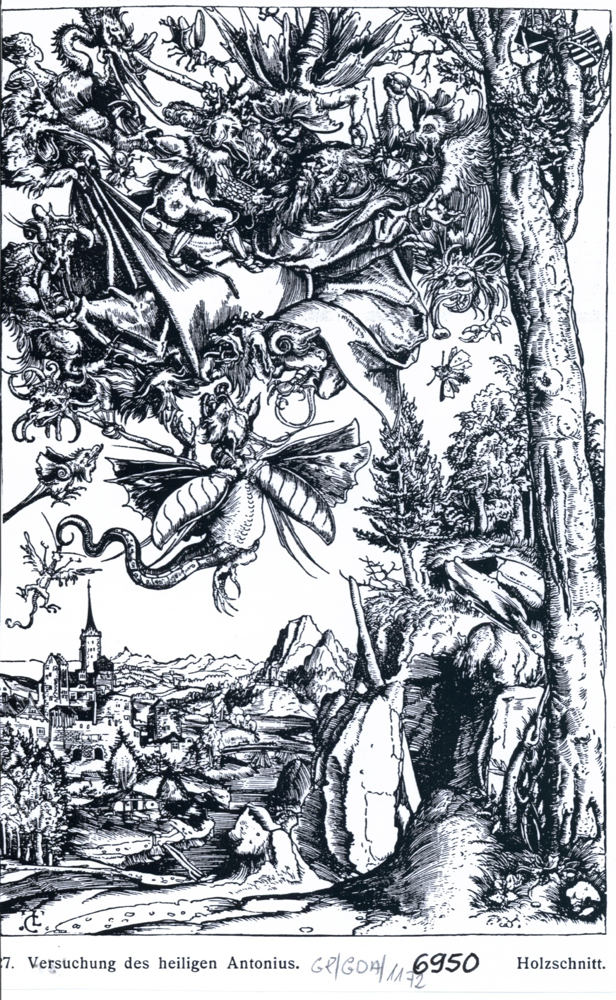
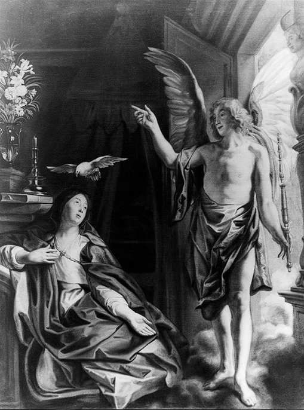

During World War II, Germany conducted not only a military one invasion of Poland, but also carried out extensive plunder cultural heritage. One of the most blatant examples of this of barbarism was the theft of thousands of valuable works of art from Poland museums, palaces and private collections. This systematic plundering process was intended to both deprave the Polish national heritage and and the strengthening of Nazi culture. The stolen paintings became a symbol not only the destruction of material goods, but also the wounding of the nation identity and memory. In this presentation we will look at the history of these treasures, as well as their long post-war fate, uncovering a multi-threaded related story with their disappearance and attempts to recover them.
 Józef Brandt (1841-1915), "Hunting Departure", late 19th century
Józef Brandt (1841-1915), "Hunting Departure", late 19th centuryUntil World War II, the painting "Hunting Departure" was in the Silesian Museum in Katowice. After the German troops entered, the collections were transported to the Landesmuseum in Bytom. During the transport many works were plundered or destroyed. At the end of the war, cultural goods from Bytom were located in the surrounding areas monasteries and palaces. Their further fate is unknown.
 Lucas Cranach the Elder (1472-1553), "Madonna and Child, called Głogowska"
Lucas Cranach the Elder (1472-1553), "Madonna and Child, called Głogowska"
Until World War II in the collegiate church of Głogów in Lower Silesia there was a very valuable painting "Madonna and Child" by Łukasz Cranach the Elder. It is most often described as "Madonna Głogowska" and marked with a characteristic one for Cranach the sign of the "winged dragon". Figures of the Madonna and Child stripped are attributes of holiness, they are presented in natural poses, expressing warmth motherhood. Father Heinrich Werner, the last German parish priest in Głogów writes: "Lukasz Cranach's Madonna was already taken away in 1943 for safety to Henryków, and from there to Lądek Zdrój, where it finally fell into the hands of the Russians in 1945". On June 4, 1945, the painting was confiscated by Major Mossew. After 2000, reproduction appeared on the website of the State Museum of Art. A.S. Pushkin in Moscow. The Polish party has been trying to get the painting back since 2004. There are other paintings in the same Museum taken from Poland during the war - "Forest Landscape" by Jan Brueghel the Elder and "Backyard with Poultry" by Daniel Schultz.
 Lucas Cranach the Elder (1472-1553), "The Temptation of Saint Anthony"
The woodcut by Cranach the Elder resembles the figure of Saint Anthony, who, under the influence of the biblical story about the young rich man, sold his wealth and settled in the desert to lead an ascetic life. Anthony was supposed to chase away demons and evil spirits with a T-shaped cross and a bell. Often in pictures he is accompanied by a pig, which, according to legend, he restored his sight. "The Temptation of Saint Anthony" is one of the graphics from Jakub Kabrun's collection. This well-known Gdańsk merchant and collector donated nearly 9,000 drawings and engravings, which became the basis of the Museum's collection Municipal in Gdańsk (later the National Museum). Part of the collection during World War II were transported to Gotha in Lower Saxony, and some were left at the Museum. In both cases were later taken by the Red Army to the Soviet Union.
 Albrecht Dürer "Reclining Lioness"
Albrecht Dürer "Reclining Lioness"
Print Room of the University Library in Warsaw, founded in 1818, it is the oldest public collection graphic in Poland. Until 1939 it was also the largest collection. Its framework is the collection of King Stanisław August Poniatowski, purchased from his heirs to the University. During World War II The Print Room lost about 60% of its collection (so far it has been recovered only 10%). Several thousand works confiscated from the Print Room BUW was to enrich the collections of the Reich, including the planned museum in Linz. A symbol The drawing "Reclining Lioness" by Albrecht Dürer became a symbol of war losses of the Print Room of the Warsaw University Library.
 Jacob Jordaens "The Annunciation"
The Annunciation by Jacob Jordaens was in the collection Municipal Museum of History and Art. J.K. Bartoszewiczów in the boat. After the city was incorporated into the Warthegau, the German management of the museum plundered and devastated works. In 1945, the rest of the collection transported to Saxony, where the boxes stamped "Łódź" were taken over by units of the Red Army and taken deep into Russia.